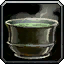

Fétrefe
fortifiant (décoction) - 50 po
↪ racines - forêt - printemps, automne
↪ racines - forêt - printemps, automne
La fétrefe est une mousse de couleur vert foncé piquée de points blancs qui pousse le long du tronc de certains arbres en forêts. La préparation qu'on tire de cette mousse permet de mieux résister aux contusions.
Une décoction de fétrefe donne un avantage aux jets de sauvegarde de Constitution pour ne pas être inconscient pour une durée de 1 heure. Notez également que sucer de la mousse de fétrefe, même si le goût n'est pas des plus agréables, aide à soulager les maux de tête.
Une décoction de fétrefe donne un avantage aux jets de sauvegarde de Constitution pour ne pas être inconscient pour une durée de 1 heure. Notez également que sucer de la mousse de fétrefe, même si le goût n'est pas des plus agréables, aide à soulager les maux de tête.
Recueil des plantes d´AideDD